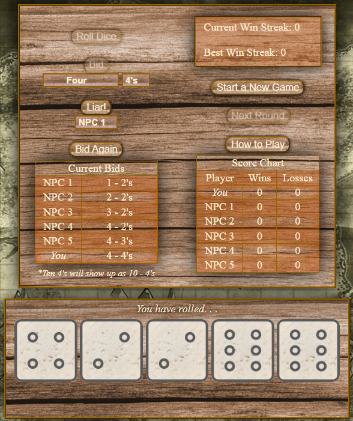

Introduction
Hey there! I'm Brendon "BusicMusic" Busic, and this is a website I've created to serve as a potfolio for all the projects I've made on my own in my free time. My goal with having a website like this is to show employers and hiring managers the talent and passion I have for computer programming, and how I express my creativity through utilizing HTML, CSS, JavaScript, as well as PhotoShop. Below you will find projects that are a blend of those skills, as well as links to visit them and explore them on your own to see how they actually function! Thank you for taking the time to visit and explore this website, I hope you like what you see!
With the formalities out of the way, on to the main content!
Portfolio
Below are all the projects I've made using HTML, CSS, and JavaScript, with a little bit of PhotoShop when it comes to the image assests used in each one. You can scroll and read as you go, or use the navigation column to the left to jump to a project that interests you.
Project #1 - Liar's Dice
|  |
This project was created during my time at ECPI University. Shortly after learning HTML and CSS I utilized my the basic skills I had learned in my high school Visual Basic programming classes and created a website where you can play a game of Liar's Dice against some "AI" (just random number generators) and see how far you can go. I got the idea for this from learning how to use the Math.floor(Math.random()) function in JavaScript, and rewatching some Pirates of the Caribbean movies, specifically Dead Man's Chest. After watching the scene where the characters are playing Liar's Dice I thought to myself "Huh... I bet I could make that game myself" and off I went. |
Project #2 - Rock Paper Scissors Ballot

|
This one is a bit more obscure as far as references go. I got the inspiration for this game from an Anime I was watching at the time called "Kakegurui" which translates to "Compulsive Gambler" in english. The concept of the show is a high school where the only thing that matters is how well you can gamble, so the show has many classic casino games with some fun twists like Rock Paper Scissors Ballot. Rock Paper Scissors Ballot is a unique twist on the classic Rock Paper Scissors game that we all know. However, you can't just pick any of the three options. At the start of the game, 30 cards are created with each card being either a Rock, a Papaer, or Scissors. Then the two players are each dealt three cards. They can only choose to play one of their cards with the option they depict. For example, you could have two scissors and one rock which means it's impossible to play a paper. The introduction of thirty randomly assigned cards means that the odds are almost never a one in three chance to guess what your oppenent will play. |
Project #3 - Dice Battle


|
Alright, so the reference for where this game comes from is definitely more obscure than the previous one. At the time of creating this one I was reading a Webtoon called Hardcore Leveling Warrior. The story of the webtoon isn't relevant to this game, so here's the basic rundown of how to play! Each player has three dice, one of each color; White, Blue, and Red. You each roll your three dice, and that determines what action each player will take. As you can see in the photo on the left, the white die determines if you attack (roll an even number) or defend (roll an odd number), the blue die and red die determine what you'll be attacking or defending with. Blue represents Magic damage and Red represents Physical damage, and which one you'll be using is determined by which of the two rolls a higher number. Physical attacks can only be blocked with a Physical defence, and Magical defence can only block Magical attacks. The game is over when one player has zero health left. This project was a big step for me as it was my first time introducting animations in my projects. Although the animations are simple, I'm very proud with how they turned out! The dice images shake for a little bit before landing on a side, and the health bar shakes and slowly shrinks according to the damage dealt and received. Simple, yet effective! |
Project #4 - Black Light Blackjack

|
Fortunately, the inspiration for this game is incredibly simple. I had been working on how to make a card game between a player and an AI (basically a random number generator) for a while, and once I had gotten it down I decided to make a blackjack game with custom cards. The images I used for the cards are complete original assets that I made myself using PhotoShop. I wanted something more unique and stand-out than just a normal set of playing cards, so I decided to make the theme of the cards a neon color that would really pop when placed under a black light. As opposed to the Rock Paper Scissors game there is no special gimmick, it's just normal blackjack with a neon paint color scheme. You draw cards and try to get a sum of 21, with Aces being 1 and face cards being 10. If you get closer to 21 than the Dealer does without going over then you win! If you go over, or if the dealer is closer than you, then you lose. |
Project #5 - What's Next?
Well, what's next? So far those are all the projects I've created, but that doesn't mean I'm done. I still have ideas for websites, programs, and games that I'd love to create.
In Conclusion
So, that's the end of my portfolio! I hope you found something of interest, and enjoyed your stay. Until next time!
-Brendon Busic